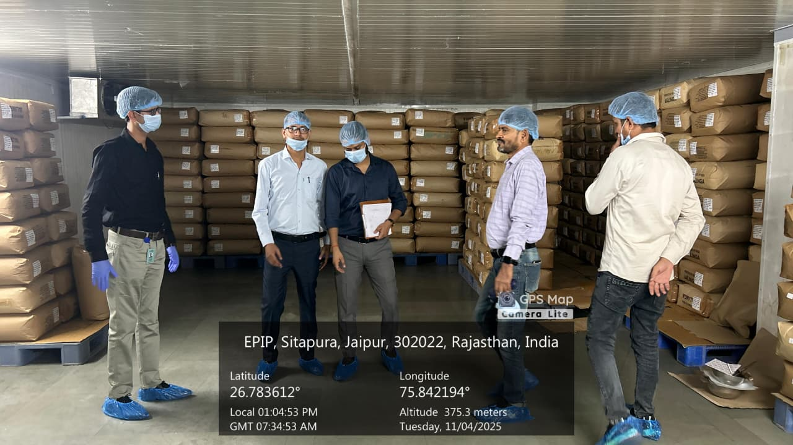

Collaboration & Enquiries
Business Tie-Ups

Collaboration & Enquiries

Reliable organic supply for:
We offer certified organic grains, pulses, millets, spices, oilseeds, and value-added products with custom packaging and nationwide distribution support.
Healthy, chemical-free pantry essentials for conscious consumers:
Pure, nutritious, and responsibly sourced.
Build your own organic brand with our end-to-end support:
Launch with confidence and credibility.
Consistent, high-volume organic raw materials for industrial and institutional needs with competitive pricing and assured quality.
Cultivating purity. Delivering trust.
The organic industry is at a nascent stage. Morarka Organic Foods Limited has been fortunate to get in to this industry very early, definitely much before it was even recognized as a business and or an industrial activity by any one else in India. Even today there are very few and very small players. It is still not on the radar of large business establishments. Being an industry leader, Morarka Organic Foods Limited has always worked to create a conducive environment for the entry of other players in this sector. As of today almost every business entity engaged in organic agribusiness and having meaningful scale of operations, have some kind of business/technology /outreach collaboration with Morarka Organic Foods Limited. For this industry to achieve its due recognition, it will need to have many more players. This also reflects on our collaborative philosophy and we intend to strengthen this approach further in future.
Morarka Organic Foods Limited has been associating with interested players in many ways, and will consider joining hands in the implementation of any new model of collaboration offered by any one.

Morarka Organic Foods Limited has been associating with interested players in many ways, and will consider joining hands in the implementation of any new model of collaboration offered by any one.
Internationally the organic industry has already become quite a big industry. With current global turnover touching about US $120 billion, and growing at an average of 10-20 percent per year, it is already the fastest growing segment in overall food businesses.,
With the rapid rise in demand for organic products in many developed economies and more so in western countries, almost all the industry players there are now looking towards India to supply the organic products.
India has many advantages which can make it a global hub for supply of organic raw materials. India also enjoys many competitive advantages in many products, and has been a regular exporter of these items, of course produced under conventional agriculture. In times to come a large proportion of these items will get converted to certified organic products. As per the research data available with us, in terms of cost benefits, India is the 'least-cost' producer of over 185 food items. This can easily make India the global organic kitchen of the world. For any interested exporter in India and for any importer abroad, Morarka Organic Foods Limited will be very happy to give them access to its organic raw material cultivation - production base in India. This will facilitate them in early entry.
In addition to many raw products of immense interest to many international players, they are also looking for joining hands with Indian players to produce processed products also. Many of them will need fresh fruits & vegetables as raw materials. Many of them are willing to bring in new technologies and best practices for managing real world class organic agribusinesses. Morarka Organic Foods Limited has been getting many such offers and will be very happy to join hands with Indian Entrepreneurs take this forward.
Morarka Organic Foods Limited is already providing back-end support to over 30 exporters by now and is a regular supplier of high quality organic materials to some of the most quality-conscious markets. Morarka Organic Foods Limited is also the single largest producer of at least 30 organic crops in India. This portfolio comprises of Cereals, Pulses, Spices, Fruits & Vegetables.
Today every person in this modern world is dependent on food served outside home, and for most of them this food has never been satisfactory. People associate health problems with this food. The common man is concerned about hygiene, then he/she has to worry about adulteration in food, and at lastly about the nutrient content in the food and its impact on health. In many discussions it can be easily noted that large number of consumers have a kind of guilty feeling associated with the food served outside their homes.
For the promotion of organic foods & lifestyle, Morarka Organic Foods Limited is offering to join hands with Food Service Industry such as restaurants, hotels, catering establishments anywhere in India & abroad. Morarka Organic Foods Limited has about 170 basic raw food ingredients in its portfolio. It has also been able to set up processing infrastructure for about 70 food ingredients. As of today it almost has every thing that any food service establishment needs to convert to organic.
For any existing food service organization such as Restaurants, Hotels, Catering units, conversion to organic under a tie-up with Morarka Organic Foods Limited offers many advantages.
Morarka Organic Foods Limited has already been supplying the ingredients & supporting many such establishments on an experimental basis. All the associates are very happy with the quality of organic materials and support services provided by Morarka Organic Foods Limited. Many of them have also reported extraordinary financial benefits from this conversion.
We are now inviting proposals from any interested food service establishment to convert to organic. A well-designed support service package ensuring smooth transition is waiting for them.
Since organic is in its infancy in India, the interface between the consumers and the trade has not evolved as yet. The constant struggle between the traditional retail outlets vis-à-vis modern retail chains has taken a new dimension in the market place. In their efforts to outsmart each other many distortions have come in place, many of them at the cost of producers & quality of products as well. Apparently some of them appearing to be in favour of consumers may harm the consumer interests in the long run.
Most food commodities being managed by trade in India is undergoing major transformation. For long essential food items were sold with reasonable margins; today they are subjected to a price war one day and extraordinary premiums the next day. As a result, there is a new kind of confusion being created in the minds of consumers. The yardstick for quality is changing. In India commodity prices have always been linked to the quality of the produce, but today the understanding about the quality is not getting reflected in terms of price.
Many retail establishments expect very high margins, this increases the consumer costs. Many of them are afraid to answer the consumer about the quality of their traditional offerings vis-à-vis new organic offerings. In such a scenario the retailing of organic food products has become a challenge as well as a new opportunity. To overcome many of these shortcomings, Morarka Organic Foods Limited has been innovating on retailing options. It is constantly working hard to ensure that organic products are made available to consumers at most reasonable prices.
Presently, Morarka Organic Foods Limited is the first choice back-end supplier of organic products to a very large number of independent small retail outlets, selling in their own brands in about 100 cities & towns.
Many modern retail chains also source their entire organic offerings from Morarka Organic. 'Down To Earth' is already the single largest selling brand in India now.
Morarka Organic Foods Limited is therefore looking to establish business tie-ups for experimenting with as many types of retail channel options as possible in joint association with anyone interested anywhere in India or abroad.
Every city has new as well as old food service establishments such as restaurants, hotels, sweet shops, catering organizations, bakeries, snack outlets, etc. They all have to face the constant threat of competition between them and especially from those who promote their products and brands more aggressively.
Organic being a new lifestyle option and a guarantee for food with the very best quality credentials, it makes sense to convert to organic. This will provide a unique positioning to the outlet, not so easily replicable, and will take the outlet much ahead of the competition.
Morarka Organic Foods Limited has evolved a complete support package for this set of establishments. It has a team of trained chefs, nutritionists, recipe development & management experts to work hand in hand with the client organizations.
In its repository, besides all the conventional regularly required ingredients, it also has access to some very unique and or lesser known food ingredients that can help create unique tastes and aromas to the simple foods.
It also has a team of food scientists and experts to design and deliver tailor made equipments, processes and techniques for making your products better and better.
Morarka Organic Foods Limited has already achieved many laurels in last few years. In case of bakery products, organic ingredients alone have been able to increase their shelf life. A new blend of Diabetic Atta has become very popular among caterers. Many fruits & vegetables after suitable processing have been able to reduce the overall costs of food. Many masala mixes have made retail food outlets to deliver unique tastes. And so on.
Morarka Organic Foods Limited is inviting the attention of the entire food retail establishments to join this unique campaign. We will provide all the support you have always been looking for, but which was never available.
We will also co-brand your product for increased market acceptance.